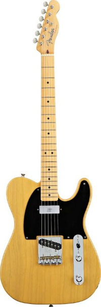
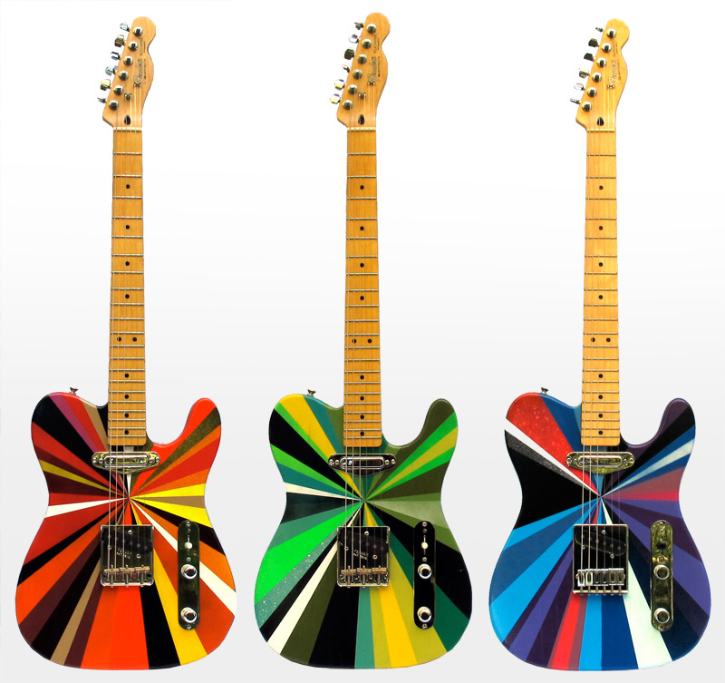

Fender Telecaster®
The Vintage Hot Rod ’52 Telecaster® guitar combines classic looks with modern playability and tone. Features include a satin-backed neck with a flatter fretboard radius and medium jumbo frets, Seymour Duncan® mini humbucking neck pickup and a single-coil bridge pickup for a slightly darker sound, vintage styling and thin-skin nitrocellulose lacquer finish.